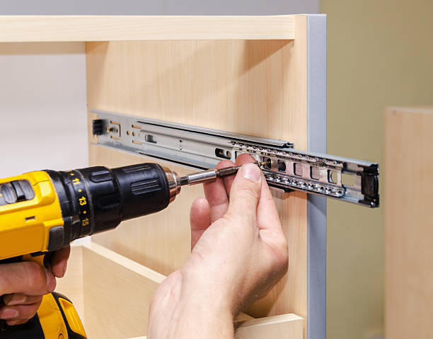

Door fittings make every exterior and interior door moveable: we use them to open and close them. Find out here what materials Door handles are made of, what types of Door handles there are and whether Door handles are actually standardized.
Many refer to these as spring butt hinges too. Their main purpose is to assure that doors close behind you. Apart from these, many use this for a wide variety of application, including garage doors, residential interior doors and commercial build-outs too.
A ball-bearing hinge has lubricated bearings between the hinge’s knuckles to reduce friction that heavy doors often cause. If we said that ball-bearing hinges are among the most durable on the market, we wouldn’t be wrong.
Security hinges come in two distinct types and with notable features like security tabs and non-removable pins. All of these have specific designs and installation techniques which make it impossible for others to tamper with and remove.
Concealed or invisible hinges are just as their name suggests. They have a unique design that keeps them hidden and let the door’s design be in the spotlight. Many people love to make their fancy doors be the star of their interiors and here is where concealed hinges fit in.
The main purpose of the overlay hinge is to reduce the thickness that many hinges add to a cabinetry. The most noteworthy aspect of the overlay hinge’s design is that it folds back on itself. With this feature, your door will lay flush against the face of its neighboring cabinet.